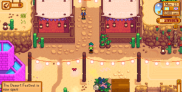
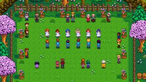
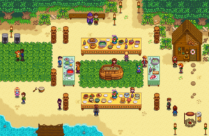
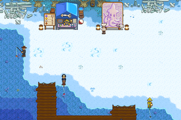
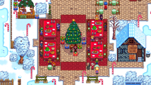

Festivales:
Los Festivales son eventos especiales en Stardew Valley. El alcalde Lewis mandará al jugador una carta antes de cada festival, diciendo dónde y cuándo será dicho evento. El día del festival, una ventana emergente en la parte izquierda de la pantalla avisará al jugador de que el festival ha comenzado.
La asistencia a festivales es totalmente opcional. Si deciden asistir a un festival (que no sea el Mercado nocturno), a su salida serán devueltos a La granja a última hora de la noche.
Si se trata de un día festivo que no sea el Festival del Desierto, Derby de la Trucha, Festival del Calamar o el Mercado nocturno, no es necesario alimentar a los animales; el juego los considerará automáticamente alimentados.
Hablar con los aldeanos en los festivales aumentará los puntos de amistad, igual que cualquier otro día. Algunos festivales pueden tener efectos especiales sobre la amistad, como el aumento de la amistad con cada aldeano conocido o el aumento de la amistad por hacer regalos.
En una partida multijugador, todos los jugadores presentes deben entrar en la zona del festival para continuar (excepto en el Mercado nocturno). Lo mismo ocurre al abandonarla, si no termina automáticamente. Por lo general, sólo el anfitrión puede iniciar otros eventos.
Cierre de Tiendas
Todos los edificios y casas en Stardew Valley están "cerrados" en todos los días festivos en los que el festival comienza antes de las 7 pm (es decir, todos los festivales excepto Víspera de los espíritus y Danza de las medusas lunares). Las cloacas, Centro Cívico, El Cine, y el Spa permanecerán abiertos. La excepción a esta regla es el Mercado nocturno, donde las casas y las tiendas están abiertas, y el tiempo sigue pasando durante el festival. Estos edificios permanecen cerrados todo el día, aunque el jugador no asista al festival.
Primavera
Festival del huevo

El Festival del huevo tiene lugar el día 13 de cada Primavera. El jugador accede al festival entrando en la plaza de Pueblo Pelícano entre las 9 AM y las 2 PM. Cuando el festival termine, el jugador regresará a La granja a las 10:00 PM.
La atracción principal del festival del huevo es la Cacería de Huevos. El jugador y otros aldeanos buscarán pequeños huevos de colores escondidos por todo Pueblo Pelízcano. La cacería de huevos comienza al hablarle al alcalde Lewis. Seguidamente, el jugador debe encontrar y recoger 9 huevos (en 50 segundos, de tiempo real), si no lo hace, Abigail ganará. (En las partidas multijugador, se necesitan menos de 9 huevos para ganar). Si el jugador gana, recibirá un Sombrero de paja como recompensa el primer año. Si ya ganaste la cacería de huevos años anteriores, recibirás  1000.
1000.
Hay un puesto donde el jugador puede comprar un objeto decorativo, tales como el Flamenco de jardín, Conejo de felpa, Plantas de temporada y Semillas de fresa. (Plantar las semillas de fresa en o antes de la Primavera 16, permitirá al jugador cosechar Fresas dos veces antes del Verano).
El festival termina cuando el alcalde Lewis anuncia al ganador de la Cacería de huevos.
Festival del Desierto
El Festival del Desierto se lleva a cabo en el Desierto de Calico durante la Primavera del 15 al 17, de 10 am a 2 pm. El jugador no necesita esperar a que Pam llegue a la Parada de autobús para visitar el Desierto durante los dos primeros días del festival. Hay varias tiendas que van rotando, una carrera en la que apostar, desafíos que completar para conseguir la moneda del evento y una oportunidad diaria de recibir un nuevo atuendo de Emily.
Al igual que en el Mercado Nocturno, el tiempo transcurre con regularidad, aunque los vecinos no estarán en sus casas o tiendas, ya que estarán en el festival.
Danza floral
La Danza floral tiene lugar el día 24 de cada Primavera. El jugador accede al baile entrando en el Bosque Tizón entre las 9 am y las 2 pm. Cuando el festival termine, el jugador regresará a La granja a las 10 PM.
El baile toma lugar en la parte más oeste del bosque, cruzando el puente que está al sur de la Torre del Mago. Sólo se puede acceder a esta zona durante la Danza floral.
Hay un puesto colocado en el área donde puedes comprar Diente de león, Narciso, Arreglo floral, Decoración de temporada, Plantas de temporada y Espantapájaros Raro #5.
En este festival, el jugador puede bailar con los solteros y solteras, u otro jugador en multijugador. Deben hablar con ellos (dos veces) e invitarlos a bailar, pero se negarán a menos que el jugador tenga al menos cuatro corazones de amistad con ellos. El jugador puede hablar con los demás aldeanos y tendrán diálogos relacionados con el evento.
Bailar aumentará la amistad con tu pareja de baile en 1 corazón (250 puntos). El baile comienza después de hablar con Lewis. El festival termina después de la danza.
Verano
Luau
El Luau tiene lugar el día 11 de cada Verano. El jugador asiste al Luau entrando en La playa entre las 9 AM y las 2 PM. Cuando el Luau termine, el jugador regresará a La granja a las 10 PM.
La atracción central del Luau es la sopa de la olla. Los aldeanos traen diferentes ingredientes para preparar esta sopa para el Gobernador, quien la prueba y la evalúa. La degustación de la sopa comienza hablando con el alcalde Lewis.
Según el tipo y la calidad de los ingredientes que el jugador introduzca en la sopa, habrá diferentes reacciones del Gobernador y el alcalde Lewis. El resultado puede aumentar o reducir los puntos de amistad con todos los aldeanos.
El Luau finaliza automáticamente después de que el Gobernador pruebe la sopa.
Derby de la Trucha

El Derby de la Trucha tiene lugar durante los días 20 y 21 de verano en el Bosque Tizón, cerca del río, debajo del Rancho de Marnie. Comienza a las 6:10 am y termina a las 2 am. Los jugadores pueden pescar Trucha arcoíris durante todo el día. Cada Trucha Arco Iris capturada tiene la oportunidad de dar una Etiqueta Dorada, que se puede canjear por premios en la tienda del festival. Los premios son aleatorios. Las Etiquetas Doradas pueden ser guardadas para luego canjearlas cualquiera de los dos días.
A diferencia de otros festivales, las tiendas y casas de Stardew Valley no cierran los días del Derby de la Trucha, y el tiempo sigue pasando durante el festival.
Danza de las medusas lunares

La Danza de las medusas lunares tiene lugar el día 28 de cada Verano. El jugador accede al festival entrando en La playa entre las 10 PM y las 12 AM. Cuando el festival termine, el jugador regresará a La granja a las 10 PM.
Durante el festival, los aldeanos se reúnen en los muelles para observar la migración de las medusas, atraídas por la luz de una antorcha que enciende el alcalde Lewis. Hablar con el alcalde Lewis dará comienzo al festival.
El festival termina automáticamente después de ver las medusas.
Otoño
Feria de Stardew Valley

La Feria de Stardew Valley tiene lugar el día 16 de cada Otoño. El jugador accede a la Feria entrando en Pueblo Pelícano entre las 9 AM y las 3 PM, y al abandonar el festival, regresará a La granja a las 10 PM.
Hay diversos juegos en los que el jugador puede ganar Fichas Estrella, una moneda que puede canjear por premios en el Puesto situado cerca de la entrada a la Parada de autobús.
La Feria también tiene una Exhibición donde el jugador puede mostrar los productos de la granja y ganar Fichas Estrella. Hablar con el alcalde Lewis después de completar la exposición inicia el proceso de evaluación. Una vez que los objetos han sido juzgados, el jugador recibe una notificación y puede volver al alcalde Lewis para conocer los resultados. Los artículos mostrados en la cabina se devuelven, pero no automáticamente. Si un jugador olvida recoger los objetos, puede encontrarlos en la caja de Objetos Perdidos de la Mansión del alcalde.
Durante el festival, el jugador puede comer Hamburguesas gratis cocinadas por Gus, al norte de la Tienda local Pierre's.
El festival termina cuando el jugador abandona Pueblo Pelícano.
Víspera de los espíritus

La Víspera de los espíritus tiene lugar el día 27 de cada Otoño. El jugador accede al festival entrando en Pueblo Pelícano entre las 10 PM y las 11:50 PM, y al abandonar el festival, regresará a La granja a las 12 PM.
El festival cuenta con un laberinto en el que es posible obtener la Calabaza de oro. Pierre tiene un puesto de venta donde el jugador puede comprar objetos festivos, en los que se incluye un Espantapájaros Raro, una Lámpara de calabaza, y la receta de la Lámpara de calabaza.
El laberinto está ubicado al norte del puesto de venta de Pierre. El laberinto tiene pocos callejones sin salida y avanza de forma casi lineal. No hay límite de tiempo para completar el laberinto. Hacia el final del laberinto, en la esquina noroeste del mapa, avanza por una pared de arbustos a la izquierda de un cartel de madera con un signo de interrogación. Una vez dentro, ve hacia el norte a través de una caverna abierta y continúa hacia el este para llegar a la Calabaza de oro.
El festival termina cuando el jugador abandona Pueblo Pelícano.
Invierno
Festival del hielo

El Festival del hielo tiene lugar el día 8 de cada Invierno. El jugador accede al festival entrando en el Bosque Tizón entre las 9 AM y las 2 PM. Cuando abandones el festival, el jugador regresará a La granja a las 10 PM.
En el festival se instalan esculturas de hielo e iglús, así como una pequeña tienda que vende decoraciones festivas. También hay una competencia de pesca, en la cual puedes participar junto con Pam, Willy y Elliott. El jugador gana si pesca al menos cinco peces. Los jugadores reciben automáticamente una caña de pescar durante toda la competición. La primera victoria otorga al jugador dos aparejos, 1 Imán y una Gorra de marinero. En los años siguientes, ganar la competencia te premiará con 2000.
El festival finaliza cuando el alcalde Lewis anuncia al ganador de la Competencia de Pesca.
Festival del Calamar
El Festival del Calamar es un mini festival de pesca que se lleva a cabo en La playa los días 12 y 13 de cada invierno. El festival comienza a las 6:10 am y finaliza a las 2:00 am en ambos días. Durante el festival, se pueden pescar Calamares todo el día y canjearlos por premios. Los premios son aleatorios y depende de la calidad del calamar. Solo pueden canjearse el mismo dia que capturas el calamar.
A diferencia de otros festivales, las tiendas y hogares de Stardew Valley (incluidos los de la playa) "no" están cerradas durante el evento, y el tiempo continúa pasando durante el festival. Los Animales también necesitan ser alimentados durante el evento; el juego no los considerará automáticamente alimentados.
Mercado nocturno

El Mercado nocturno tiene lugar del 15 al 17 de Invierno, en La playa, de 5 pm a 2 am. El festival cuenta con tiendas, un espectáculo de sirena y un submarino de pesca en aguas profundas donde el jugador puede capturar peces únicos.
Al contrario que en otro festivales, las tiendas y casas de Stardew Valley no están cerradas en los días del Mercado nocturno y el tiempo continúa pasando durante el festival
Fiesta de la estrella de invierno
La Fiesta de la estrella de invierno tiene lugar el día 25 de cada Invierno. El jugador asiste al festival entrando en Pueblo Pelícano entre las 9 AM y las 2 PM, y al abandonar el festival, regresará a La granja a las 10 PM.
El principal evento de la Fiesta de la Estrella de Invierno es un intercambio de regalos secreto. Se seleccionará un aldeano al azar para hacer un regalo al jugador, y se le asignará un aldeano al azar al que hacer un regalo. Una semana antes del 18, el alcalde Lewis te mandará una carta diciéndote quien es tu amigo secreto. En el festival, al hablar con el amigo secreto aparecerá su inventario para decidir el regalo que quiere dar. Al hacer un regalo, el amigo secreto reaccionará, y se producirá la escena en la que el jugador descubrirá quién le hace el regalo en el festival.
El festival termina cuando el jugador abandona Pueblo Pelícano.